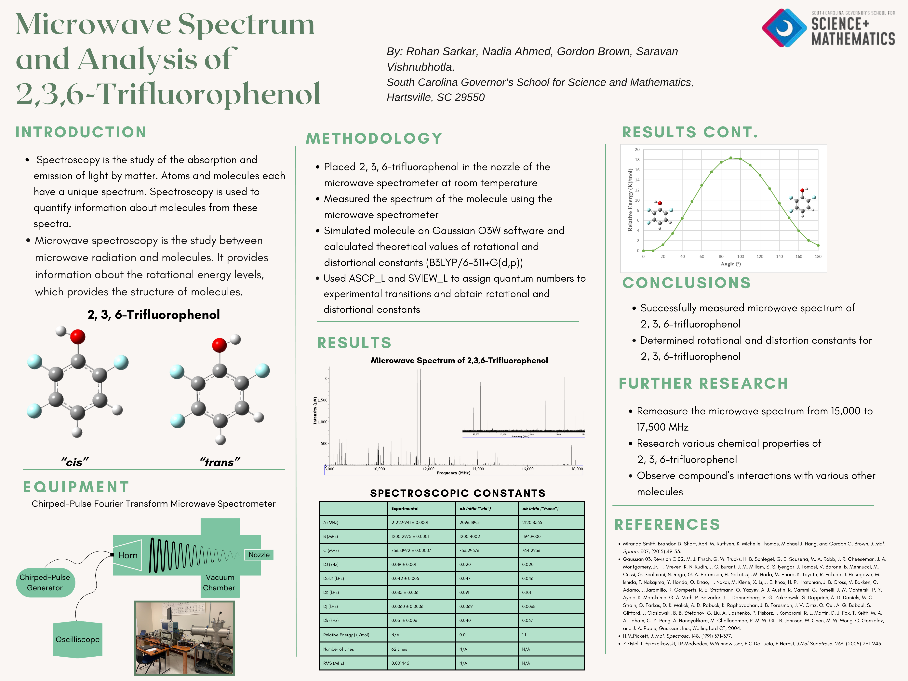

Molecular Structure of 2,3,6-Trifluorophenol via Microwave Spectroscopy
The first measurement of the molecular structure of 2,3,6-trifluorophenol, contributing original data to structural chemistry.

01
Background
Microwave (rotational) spectroscopy measures the frequencies at which gas-phase molecules absorb microwave radiation as they rotate. Those frequencies depend on the molecule's moments of inertia, which depend on the exact positions of its atoms, so a rotational spectrum can be used to determine molecular structure with high precision.
02
The Project
Working with Dr. Gordon Brown, I made the first measurement of the molecular structure of 2,3,6-trifluorophenol using microwave spectroscopy, contributing original data to structural chemistry.
03
Recognition
I presented this work at two scientific conferences and earned 3rd place in the Chemistry Division at the South Carolina Junior Academy of Science in March 2024.